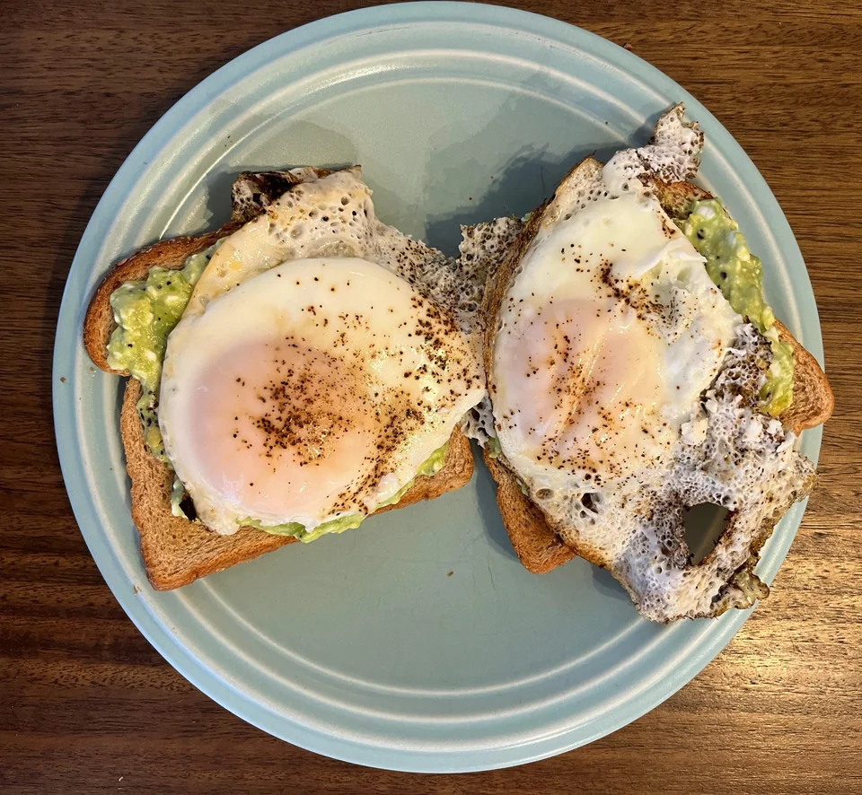

Mango Dessert

This is one of my favorite breakfasts - it's easy, filling, and relatively healthy.
Hope you try it and enjoy!
INGREDIENTS
- 1/2 avocado
- 1/3 cup cottage cheese
- 1 tsp Everything But the Bagel Seasoning
- 2 eggs
- Salt and pepper to taste
- 2 pieces of bread of choosing
STEPS
- Scoop out half an avocado and mash in a bowl with a fork. Mix in the cottage cheese
and Everything But the Bagel Seasoning.
- Cook your eggs. (My technique: Grease a cast-iron skillet and turn it on medium-high heat
for a few minutes. Crack room-temperature eggs into the hot skillet and add salt and pepper.
Cover eggs with a pan lid and cook for about 3-4 minutes, just until the yolks change color.
Remove eggs from heat.)
- Toast your bread and top the toast with the avocado mixture, then place a sunny-side up
egg on each piece of toast.
- Accept that you have eaten avocado toast and now will never be able to afford to buy a home.